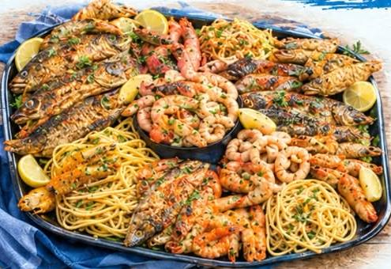

البلطي
سمك مياه عذبة، طعمه هادي ولحمه متماسك وسعره في المتناول عادةً. مناسب للقلي والشوي، وبيعجب الأطفال لأن طعمه مش قوي.
القاروص
سمك بحري لحمه أبيض متماسك وطعمه لطيف. بيتحمل الشوي والفرن، ومناسب لمين بيحب لحم سمك نضيف وقليل الشوك نسبيًا.
الدنيس
لحمه طري وطعمه حلو مميز، وبيتعمل غالبًا مشوي أو في الفرن بتتبيلة بسيطة عشان طعمه يظهر.
البوري
طعمه أقوى ودسمه أعلى، وهو من الأصناف الشعبية المحبوبة في مصر، ومناسب جدًا للشوي والقلي.
الفيليه
لو مش بتحب الشوك، الفيليه اختيار عملي: سهل الأكل ومناسب للقلي والصوص والفرن.
قاعدة سريعة: السمك المتماسك (قاروص، دنيس) للشوي، والسمك المناسب للقلي (بلطي، فيليه) ممتاز للمقلي. والكل بيتحسّن مع تتبيلة بسيطة وليمون.
وعلى فكرة، الأسعار والأنواع المتاحة بتختلف حسب الموسم وسعر السوق، فاسأل دايمًا عن المتاح النهارده.
عايز تجرّب؟ شوف المنيو أو ابعت طلبك على واتساب.